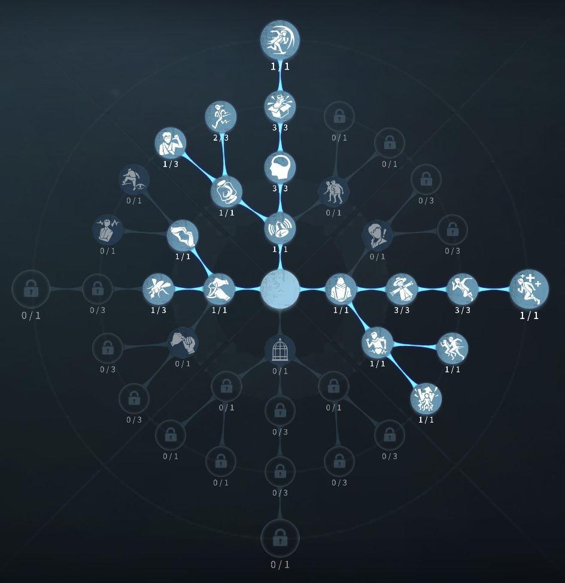
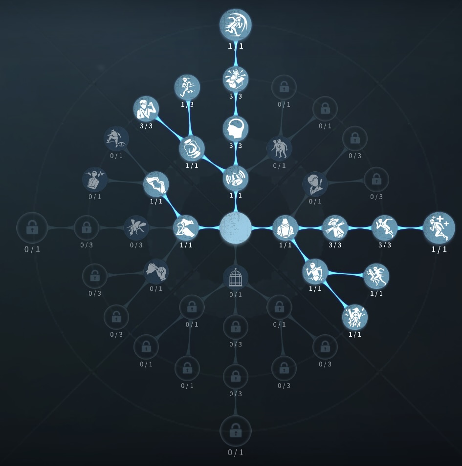

闘牛士(エルナンド・ロメロ)の評価
ハンター！俺の言う通りに突撃してきな！！
外在特質と特徴
特質1:ムレータ技術
・即座に6メートル範囲内の指定エリアにダッシュし、到着後にムレータで自身の半径2.5メートルの円形エリアをなぎ払う。0.6秒間持続。その間はほとんどのダメージとコントロール効果を無効化する。・なぎ払いがハンターに命中した場合、闘牛士は更にカメラ方向に向かって10メートルダッシュし、ハンターにノックバックと50%の減速効果を与える。2.5秒間持続。
・ダッシュ中にハンターやマップモジュールに衝突した場合は、即座になぎ払いが発動する。
・最初のダッシュ到着地点の付近に窓や落とされた木の板があり、付近にハンターがいない場合、なぎ払いが素早い乗り越えに変化し、その操作速度が10%増加する。
特質2:離脱の構え
・闘牛士がムレータのなぎ払いをハンターに命中させると、ムレータ技術は次の追加効果を獲得する:次のなぎ払い範囲内にサバイバーがいる場合、闘牛士はほとんどのダメージとコントロール効果から相手を守り、そのサバイバーを連れて一緒に前方へ12メートルダッシュする。・この効果はサバイバーを連れて移動した後に失われ、次になぎ払いがハンターに命中した際に再び獲得できる。
特質3:挑発の布
・闘牛士がハンターの近くで行動したり、ムレータ技術を使用すると、闘志を溜めることができる。闘志が100に達すると挑発の布スキルを1回分獲得する。挑発の布スキルは各対戦につき2回まで獲得でき、一度スキルを使用しなければ次のチャージは開始しない。・挑発の布スキルを解放した後、次に板・窓を乗り越える際は必ず素早い乗り越えになり、操作地点にムレータを残す。ムレータの存在時間は8秒。ハンターがムレータを視認すると、強制的にその地点へ移動し板・窓を操作するが、この時間が5秒を超えた場合、ムレータは効果を失い、強制移動が終了する。
・ハンターがムレータに引き寄せられている間、25メートル範囲内にいるサバイバーが闘牛士のみかつ追撃状態である場合、ハンターの今回の操作速度が10%低下する。25メートル範囲内に追撃状態の他のサバイバーがいる場合、ハンターの今回の操作速度が20%上昇する。
特質4:生死の一線
・ハンターが付近6メートル以内で攻撃アクションを行うと、闘牛士の移動速度が10%低下する。板・窓の操作速度が10%上昇する。闘牛士の簡単解説
「ムレータ技術」で無効化できるもの
フライホイール効果と少し似ているスキルである。
復讐者の黒レオ攻撃
道化師のピエロダッシュ
断罪狩人のチェーン
リッパーの霧刃(攻撃範囲外)
結魂者の糸吐き
白黒無常(ベルのみ)
黄衣の王の触手攻撃
泣き虫の魂
魔トカゲの落下スキル攻撃
ボンボンの爆弾
ヴァイオリニストの弦攻撃
彫刻家の石像
アンデッドの重叩き
アンデッドのダッシュ攻撃
破輪の悲観
漁師の湿気ダメージ
蠟人形師の蝋
隠者の奇跡
夜の番人の捕食
アイヴィの浸食度
ハバルーのダブルサプライズ
雑貨商の砕石売買
女王蜂の毒針
基本的な立ち回り方
1. 追われた時
ムレータ技術を使って、ハンターのスキル、攻撃範囲外に逃げよう板間や窓枠に潜りこむのも強い使い方！ムレータ技術を使うと闘志を貯めることもできるため使っていこう
また、ムレータ技術は回復アイテムため、惜しまず使用していこう。
闘志100を貯めることができたら、板窓で乗り越え攻防をしよう！！もし、板窓攻防に負けたとしても挑発の布で乗り越えることで攻撃をキャンセルさせ、挑発の布スキルを発動できる。(恐怖の一撃は攻撃キャンセルのためうけない。)
2. 追われない時
解読しよう！
盤面中盤～終盤はダブルチェイスが必要な時はダブルチェイスしよう！！ムレータ技術や挑発の布はダブルチェイスに特化したスキルのため強すぎる！！
盤面をひっくり返さないと負ける時には、ダブルチェイスで戦局を変える！ダブルチェイスはスキルを全部使って行い、スキルが枯渇してきたら、早めに切り上げ解読をしよう！！最後の肉壁以外ではダウンは避けよう！！
3. 注意点
闘牛士を使う際には、以下の点に注意しましょう。
🔹 スキルを温存しすぎないでおこう！
→スキルは回復アイテムのため時間がたつにつれて回復するので
おすすめの内在人格
フライホイール解読型人格
この内在人格は、観客効果を採用して解読速度を上げつつ、防衛反応で板窓強化、癒合で治療を高めた人格！

フライホイール治療型人格
この内在人格は、癒合3を採用しておくことで、ダブルチェイス後の治療を早めた人格人格


みんなのコメント